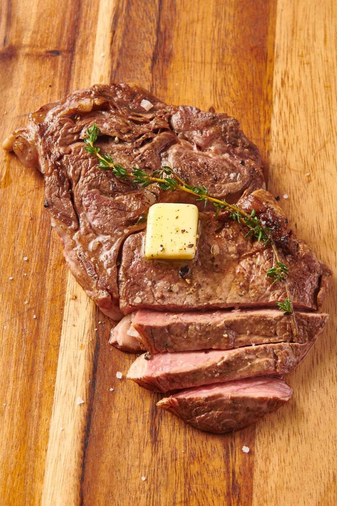

Pan-Seared Ribeye Steak

Description
My favorite steak. The fattiest cut. Supposedly the worst for you. Pair with a scotch.
Ingredients
- 1 ribeye steak, about 1 inch thick
- 1/2 teaspoon olive oil
- kosher salt
- coarse grind black pepper
- garlic powder
Steps
- Preheat oven to 400 degrees.
- Place large cast iron skillet on stove at high heat. Give it a couple minutes to get really hot. You want it just shy of smoking.
- Pour 1/4 teaspoon on each side of steak, and work it all over steak with your hands to cover evenly.
- Sprinkle salt, pepper, and garlic powder to taste on both sides of steak.
- Place steak in skillet. If it doesn't immediately sizzle, the pan was not hot enough.
- After two or three minutes, turn to other side.
- After other side has cooked for about two minutes, place skillet in the preheated oven, and cook for another 5 minutes.
- Remove steak from oven, and place it on plate to rest for 5 minutes. Steak is now cooked to rare perfection and ready to eat.